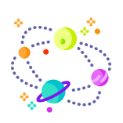

Mars
화성은 태양계의 네 번째 행성이다. 4개의 지구형 행성 중 하나다. 동양권에서는 불을 뜻하는 화(火)를 써서 화성이라 부르고 로마 신화의 전쟁의 신 마르스의 이름을 따 Mars라 부른다.
Read More

Jupiter
목성은 태양계의 다섯번째 행성이자 가장 큰 행성이다. 태양의 질량의 천분의 일배에 달하는 거대행성으로, 태양계에 있는 다른 모든 행성들을 합한 질량의 약 2.5배에 이른다.
Read More
Saturnus
토성은 태양으로부터 여섯 번째에 있는 태양계의 행성으로, 진성(鎭星)으로도 불렀다. 토성은 태양계 내의 행성 중 목성에 이어 두 번째로 크며, 지름은 약 12만 킬로미터이다.
Read More